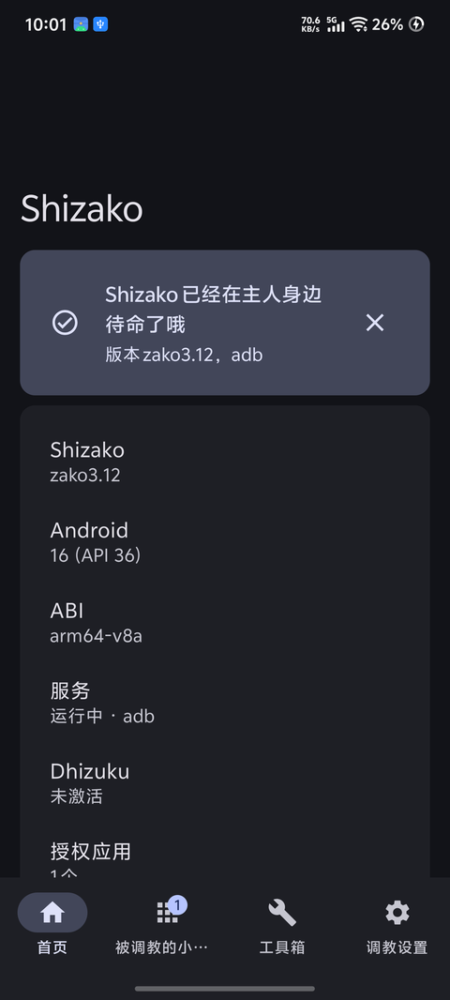
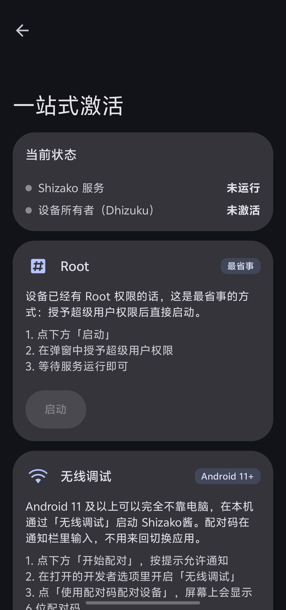
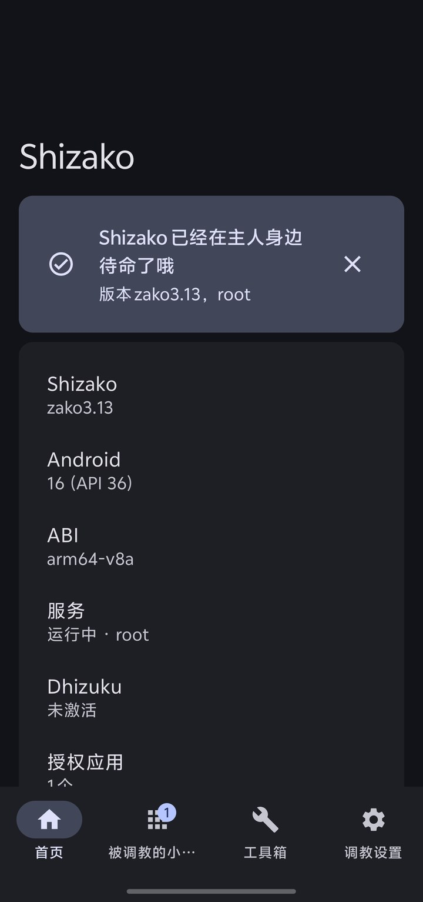

免 Root 特权
通过 ADB / 无线调试获得接近 Root 的能力 —— 不拆机、不刷机、不影响保修。
免 Root，也能拿到系统特权。
用 Root / 无线调试 / 电脑 ADB / Dhizuku 唤醒一个特权小进程，再把这份特权借给你点头的应用 —— 每个应用的通行证都由你亲手发、随时能收回。
Android 7.0+ · 无线调试激活需 Android 11+ · Apache-2.0

免 Root，也不用刷机。
手里有什么就用什么：一台手机、一根数据线，或者已经 Root 的设备。只有 Dhizuku 会改变系统状态，其余三种只在本次开机内生效。
看真机截图教程打开「无线调试」，在应用内扫码或配对。已配对过的，重启后一键启动。
推荐把应用内给出的 adb 命令复制到电脑执行一次，没有版本限制。
KernelSU / Magisk / APatch 点一下、授一次权，还能打开开机自启。
电脑执行一次 dpm 命令，之后免 Root、免无线调试，重启也不失效。
重启不失效FEATURES
一句话：不 Root 整台手机，只把系统特权借给你信任的应用。
通过 ADB / 无线调试获得接近 Root 的能力 —— 不拆机、不刷机、不影响保修。
每个应用第一次连接都要你亲自授权，白名单只存在本机，想收回随时收回。
用官方 Shizuku-API 写的应用一行代码都不用改，装好就能连上她。
一键成为「设备所有者」：特权常驻、免 Root 免无线调试，重启也不失效。
外部数据（Android/data、obb）打包进你选的 SAF 目录；替换式恢复，解压失败时原数据一个字节都不动。
以 shell/root 身份提供受限文件接口：路径白名单、四层访问降级，每次调用都写审计。
受信应用免确认直装，外部请求弹确认框；APK / apk.1 / XAPK / APKS 一个队列全支持。
带令牌与签名校验的广播入口，Tasker / MacroDroid 可以执行特权命令并按包名收回结果。
多选批量授予 / 撤销，带影响确认、进度与结果报告；每一批都写进审计日志。
三个内置模板 + 自定义模板，支持 SAF 导出导入，换机时直接搬过去。
模块管理、Shell 控制台、无障碍保活、一键注入 —— 常用特权操作不必再开电脑。
玻璃拟态 / Material 3 两套风格一键切换，深浅色与动态取色全适配。
SCREENSHOTS
真机截图（vivo V2417A / Android 16，深色 + 玻璃风格）。



COMPATIBILITY
通信协议与上游 Shizuku 同一套 —— 但名字、包名、身份都是她自己的。
官方 dev.rikka.shizuku:api 写的应用（MT 管理器、冰箱、SystemUI Tuner 等）装好就能连：服务端只校验「是否请求了权限」，首次连接照样弹授权框。
被设为 Device Owner 后，Dhizuku-API 应用把 Shizako 当 Dhizuku 用；特权转发全部在 Shizako 进程内完成，不给第三方开系统 binder 后门。
自己的包名、自己的权限名、自己的 provider authority —— 两者可以同时安装，哪个在跑就用哪个。
按上游许可要求，fork 不得使用上游的应用 ID、名称与 moe.shizuku.manager.permission.*，所以本项目用 com.churan.shizako 和自己的一套权限名。
TRUST
所有官方构建都用同一张证书签名。指纹对不上 = 这份 APK 被人重打包并换过签名，不要安装、不要授权。
签名指纹：官方构建固定为下面这张证书。用 apksigner verify --print-certs 或应用内「设置 → 关于」核对。
没有偷偷摸摸：每份特权都属于你点头过的某个应用，白名单只存本机，每次特权 API 调用都写进审计日志。
CN=Shizako, OU=Churan, O=Churan, L=Beijing, ST=Beijing, C=CN
SHA-256: 515BAF0C727F2AFBABA8A22379A05F8F2CC98682E5BEB24FB166565ACC9F9C8A
不收集数据：应用不上报任何使用数据；唯一的对外请求是 GitHub 公开 release 接口，用来判断有没有新版本。
开源、Apache-2.0：可以自己克隆编译；上游版权归 RikkaApps，修改部分版权归 初然。
F-Droid：由 F-Droid 用其自己的密钥重签名，指纹与上表不同属正常，请以 F-Droid 页面为准。
FAQ
不需要。无线调试或 USB 就能激活；有 Root 也可以，只是姿势更多。
兼容 Shizuku-API 生态 —— 用官方 SDK 写的应用零改动直连。按上游许可要求使用自己的包名与权限名，因此可以和官方版本装在同一台设备上。
每个应用都要你亲自点头才拿得到通行证，白名单本地记录、随时收回；Dhizuku 特权转发只在 Shizako 进程内完成，存储代理还要额外单独授权并逐次审计。
Android 7.0 及以上；无线调试激活需要 Android 11+。
不收集。应用不上报任何使用数据；自动检查更新只请求 GitHub 的公开 release 接口，用来判断有没有新版本。
开源，Apache-2.0。克隆仓库后执行 ./gradlew :manager:assembleRelease 即可，需要 JDK 21 与 Android SDK 36。